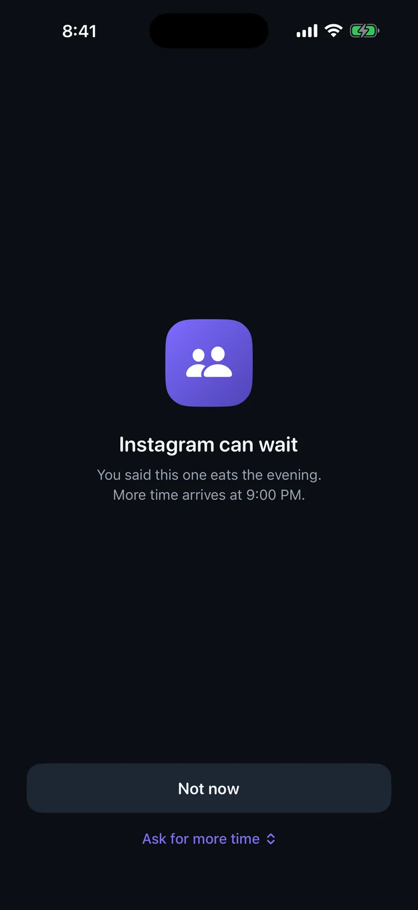
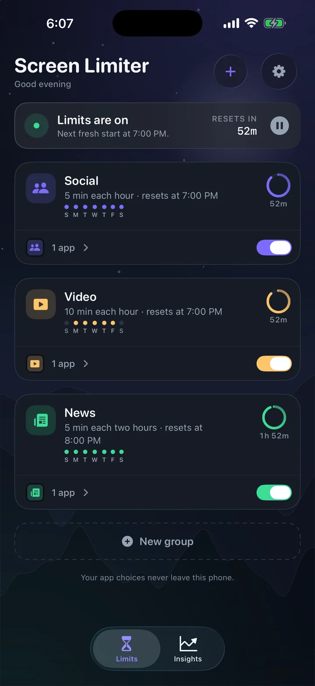
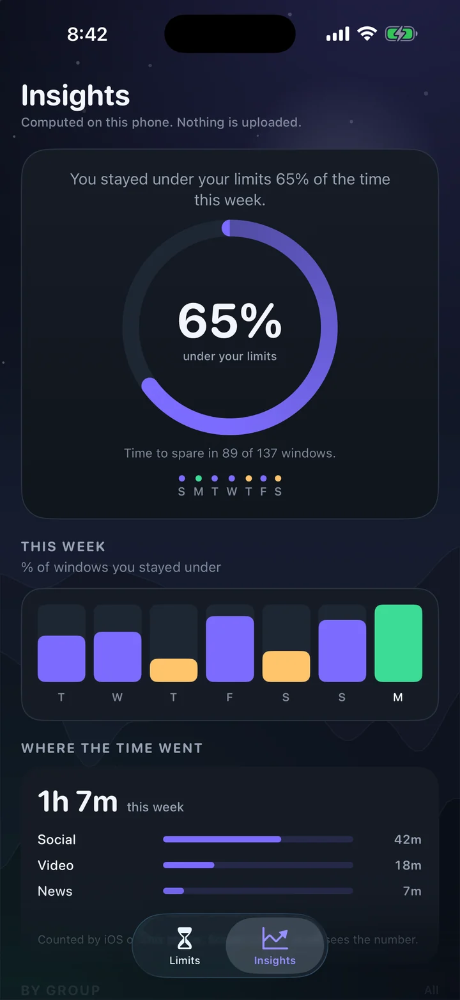
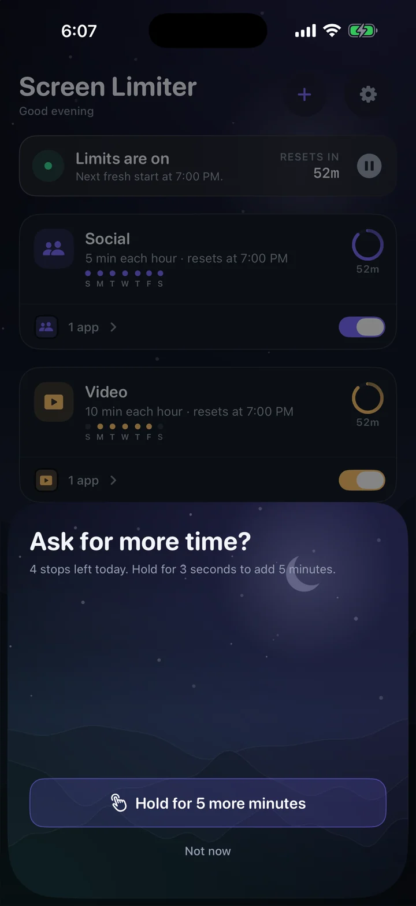
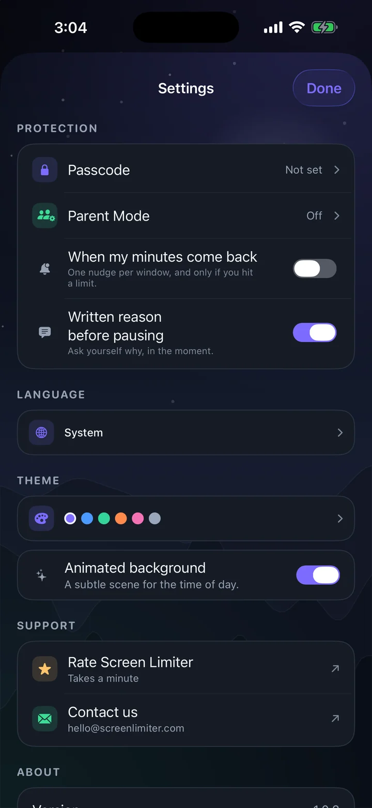
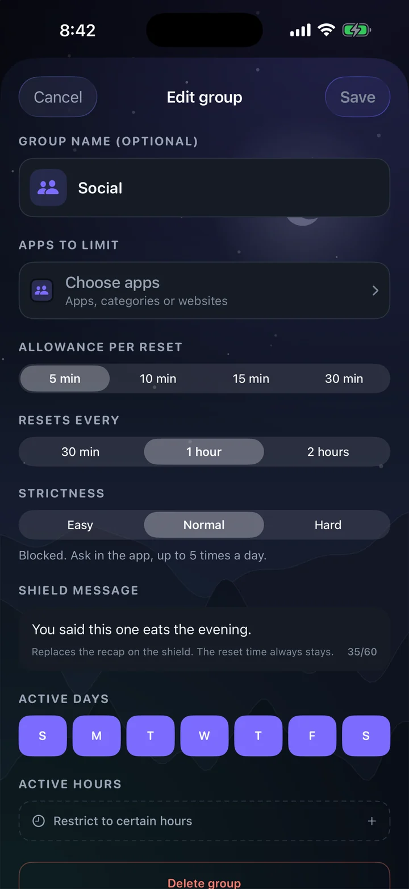

It burns before the day starts
A single budget doesn't care when you spend it. The hours you actually wanted to protect — the evening, the ones with people in them — get nothing left.
For iPhone · On the App Store
Screen Limiter gives the apps you choose a small allowance — every 30, 60 or 120 minutes, per group. When the minutes are gone, the app is shielded. When the next window opens, the block lifts on its own.
Free · no account · no ads · no tracking



Give yourself thirty minutes and it's gone by 9:40 in the morning. Now the choice is to lose the rest of the day, or to press the button that ignores the limit — and once you've pressed it, the limit was only ever a suggestion.
A single budget doesn't care when you spend it. The hours you actually wanted to protect — the evening, the ones with people in them — get nothing left.
A one-tap bypass printed on the block is exactly what an impulsive moment goes looking for. It takes less effort to ignore the limit than it took to set it.
Break it twice and you stop believing the number. So you stop setting limits at all — or you set ones you already know you'll be crossing.
Set it once. It repeats all day, whether or not Screen Limiter is open.
Apps, categories or websites. Split them into groups that match the way your day actually falls apart.
5, 10, 15 or 30 minutes — per group, not once for everything. Social and video don't have to share a budget.
A fresh allowance every 30 minutes, every hour, or every two hours. Same choice on weekends, or a stricter one.
Minutes gone, apps shielded. At the next window the block lifts by itself — no app to open, nothing to remember.
Strictness is set per group, because a messaging app and a video app don't deserve the same rules.
The block is there, and you can wave it away from the shield itself. No counter, no asking.
Blocked. Getting more time means opening Screen Limiter and holding — five times a day, then the shield stays up.
One stop. After that, nothing until the window resets — the app you keep losing an hour to.
Six screens, captured on an iPhone. The app also ships a light appearance and six accent themes.



Everything here is on. There is no Plus tier waiting to unlock a better version of the app.
Put a code in front of the settings. Stored as a salted hash in the keychain, never as the code itself.
Hand the passcode to someone else. Screen Limiter locks itself and every change needs their code — a security question is the way back in.
Seven days of outcomes, kept on the phone: how many windows you stayed under, and how each group is doing.
Violet, ocean, forest, sunset, rose or graphite. Themes only move the accent colour, so nothing you read ever loses contrast.
English, Spanish, French and German — the whole app, including the block screen, not just the menus. Or follow the system.
No streaks, no badges, no notifications nagging you to come back. The reward for using Screen Limiter less is that you don't see it.
Every app here does something useful, and several do things Screen Limiter doesn't. The column that matters is how the time is meted out, and what it costs you to get more.
Swipe the table sideways for the other columns →
| App | Allowance | Resets | Getting more | Account & data |
|---|---|---|---|---|
| Screen Limiter | 5–30 min per group | Every 30, 60 or 120 min, per group | Easy: wave it away · Normal: 5 stops a day · Hard: 1 stop | None. No server, no analytics |
| Precursor | 5–15 min per hour (30 with Plus) | Top of every hour; 30-min windows on Plus | Easy, Normal (5 stops) or Hard (1 stop); passcode, Parent Mode | No account; limits on-device, purchase check |
| Apple Screen Time | One daily budget per app or category | Daily | Bypass from the shield, unless a Screen Time passcode is set | Stays on device |
| Opal | Daily time limits, schedules, sessions | Daily | Waiting room, reflection, Hard Mode | Account required; usage stays on device |
| one sec | None — a pause before every open | Not applicable | Breathe, then decide; re-intervention after a set time | No account by default |
| ScreenZen | Daily goals, open limits, timed blocks | Daily | Waits, prompts, strict blocks, settings lock | Optional account |
| Jomo | Daily time budget or opens per day | Daily | Long friction list, Strict Mode | Optional account |
| Freedom | Timed sessions, across devices | When the session ends | Session breaks; Locked Mode | Account required |
Read the detailed comparisons →
Summarised from each app's public App Store listing and documentation in November 2026. Free tiers and features change often — the apps are Precursor, Opal, one sec, ScreenZen, Jomo and Freedom. Screen Limiter is not affiliated with any of them; their names belong to their owners.
Honestly
Precursor got there first and does it well. If an hourly app blocker is what you want, it's a fair choice. Screen Limiter exists because we wanted three things it didn't quite do.
30 minutes, an hour, or two hours — chosen per group. A 30-minute window is a paid extra in most apps; a two-hour one usually isn't offered at all.
The messaging app you need at work can sit on Easy while the video app sits on Hard. One strictness level for the whole phone always ends up set to the loosest one.
No account, no server, no analytics — not even an opt-in switch. The app has no networking to switch on.
Privacy
Screen Limiter is built on Apple's Screen Time framework, which hands an app an opaque token instead of an app name. That token can be turned back into a name on this phone — it's how Screen Limiter offers to name a group after the app you picked — but it means nothing anywhere else, and nothing leaves. Your groups, your limits and your week of history are written to this device, which is the only place they exist.
There is nothing to sign up for, nothing to sign into, and no email address to hand over.
Screen Limiter has no backend. There is no API for your data to travel to, and nothing to breach.
No third-party SDKs, no crash pings, no usage counters. Deleting the app removes every trace of your limits.
Read the privacy policy One page, written to be read once.
The apps in that group get a system shield — the same kind Apple's own App Limits use. Tapping through it asks Screen Limiter for more time, and how hard that is depends on the group's strictness.
Yes. The next window is scheduled with iOS ahead of time, so the block lifts at the boundary whether Screen Limiter is open, in the background, or force-quit.
Yes, in a few ways: pause all limits, switch a group off, or delete the app — which removes every limit with it. Screen Limiter is friction for the moment you'd rather not have. It isn't a lock on your own phone, and it isn't sold as one.
Not in any way that leaves your phone. iOS gives Screen Limiter an opaque token, and the phone can resolve it into a name locally — that is how a new group gets suggested a name. Nothing is uploaded, so the only place your choices exist is on this device, and Insights count windows and outcomes rather than app identities.
No. Payments are switched off entirely in this build: no paywall, no trial clock, no upgrade nag. Every feature described on this page is available.
Yes — a Home Screen widget for every group's reset time, and Lock Screen widgets in all three sizes. While a group is blocked it shows "back at 9:00 PM", and a Live Activity counts the minutes down on your Lock Screen and in the Dynamic Island without opening anything.
Siri and Shortcuts can pause, start, or tell you when the next window opens — "Pause my limits in Screen Limiter". Control Center gets a button that opens Screen Limiter on the pause sheet, because pausing is the one thing here that should still cost you a moment.
An iPhone or iPad on iOS 17 or later, and permission to use Screen Time when Screen Limiter asks for it.